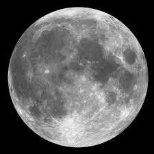

|
|
Луна

Луна — единственный естественный спутник Земли. Самый близкий к Солнцу спутник планеты. Второй по яркости объект на земном небосводе после Солнца и пятый по величине естественный спутник планеты Солнечной системы.
Параметры:
| Диаметр: |
3474,2 км |
| Масса: |
7,3477 * 1022 кг |
| Период обращения по орбите: |
27,32166
земных суток |
| Период обращения вокруг оси: |
27,32166
земных суток |
| Плотность: |
3,3464 г/см3 |
| Ускорение свободного падения: |
1,65 м/с² |
| Наклон оси относительно Земли: |
5° |
| Расстояние до Земли: |
384 400 км |
| Эксцентриситет: |
0,055 |
| Температура на поверхности: |
-23°С |
Колонизация Луны
Существующие планы по строительству на Луне обитаемых баз иногда считаются предварительным этапом заселения, но постоянное и автономное пребывание человека — на порядок более сложная задача. В настоящее время уже разработаны несколько проектов по колонизации Луны:
Первый план
- 1 этап. Предполагает отправку на Луну автоматических межпланетных станций. Они должны будут определить состав и физико-химические свойства лунного полярного реголита с водяным льдом и другими летучими соединениями. Кроме того, задачей аппаратов станет выбор наиболее перспективного района в области Южного полюса Луны для будущего развёртывания там полигона и лунной базы.
- 2 этап. Включает пилотируемые экспедиции на орбиту Луны без высадки на её поверхность.
- 3 этап. Включает высадку космонавтов в районе потенциального размещения лунного полигона и развёртывание первых элементов инфраструктуры из лунного вещества. В частности, предлагается начать строить элементы лунной астрономической обсерватории, а также объектов для мониторинга Земли.
Второй план
- 1 этап. Картографирования поверхности Луны и разработка тяжелой ракеты-носителя, разгонного и посадочного лунных модулей.
- 2 этап. Определение места будущей базы, доставка ракеты-носителя и четырёх космонавтов, и модулей для создания самой базы, вывод на орбиту космической станции.
- 3 этап. Доставка и монтаж командного и ремонтного модулей, энергетической установки питания базы и лунохода.
Когда дело доходит до терраформирования Луны, возможности и проблемы, связанные с этим, очень похожи на проблемы Меркурия. Во-первых, у Луны есть атмосфера, которая настолько тонкая, что ее можно назвать лишь экзосферой. Во-вторых, летучих элементов, необходимых для жизни, очень мало (водорода, азота и углерода).
Решить эти проблемы можно путем захвата комет, которые содержат водяные льды и летучие вещества, и отправки их на поверхность. Кометы сублимируют, рассеивая эти газы и водяной пар, создав таким образом атмосферу. Эти удары также высвободят воду, которая содержится в лунном реголите, и она скопится на поверхности, образуя естественные водоемы.
Передача импульса от этих комет также могла бы ускорить вращение Луны так, чтобы спутник перестал быть приливно заблокирован. Луна, суточный цикл которой ускорился бы до 24 часов, существенно упростила бы колонизацию и адаптацию к жизни.
Есть также возможность паратерраформирования частей Луны, которое было бы подобно облагораживанию полярного региона Меркурия. В случае с Луной подошел бы кратер Шеклтона, в котором ученые уже нашли водяной лед. Используя солнечные зеркала и купол, можно было бы превратить этот кратер в область с микроклиматом, в которой растут растения и имеется пригодная для дыхания атмосфера.
Плюсы и минусы колонизации Луны
- Радиация и микрометеориты. На Луне без решения радиационной и метеоритной проблем невозможно создание условий для нормальной колонизации. Во время солнечных вспышек создаётся поток протонов и других частиц, способных представлять угрозу для космонавтов. Однако эти частицы обладают не слишком большой проникающей способностью, и защита от них является решаемой проблемой. Кроме того, данные частицы обладают низкой скоростью, а значит, есть время для того, чтобы спрятаться в антирадиационные укрытия. Гораздо большую проблему представляет жёсткое рентгеновское излучение. Расчёты показали, что астронавт после 100 часов на поверхности Луны с вероятностью 10 % получит опасную для здоровья дозу (0,1 Грея). В случае же солнечной вспышки опасную дозу можно получить в течение нескольких минут.
- Лунная пыль. Отдельную проблему представляет лунная пыль. Лунная пыль состоит из острых частиц (поскольку нет сглаживающего влияния эрозии), а также обладает электростатическим зарядом. В результате лунная пыль проникает везде и, обладая абразивным действием, уменьшает срок работы механизмов. У некоторых людей лунная пыль способна вызвать аллергическую реакцию организма.
- Низкая гравитация. Сила тяжести у поверхности Луны составляет всего 16,5 % от земной (в 6 раз слабее), поэтому для долговременного пребывания человека на Луне рассматриваются варианты создания искусственной силы тяжести с помощью центрифуг, обеспечивающих земной уровень гравитации, необходимый для нормального функционирования организма.
- Сбор комет и льдов из внешней Солнечной системы потребует инфраструктуры, которой просто не существует и будет дорого создать. По сути, потребуются сотни космических аппаратов, чтобы собрать все ресурсы, и их придется оснастить двигательными системами, которые позволят им совершать поездку в короткий промежуток времени и которых тоже пока не существует.
- В то время как длительные периоды времени, проведенные в условиях микрогравитации, как известно, вызывают мышечную дегенерацию и потерю плотности костной ткани, непонятно, как эффект низкой гравитации скажется на постоянном населении и детях, рожденных в таких условиях. Возможно, придется генно-модифицировать земные растения и животных, чтобы они могли жить в лунных условиях, но неизвестно, будет ли это успешным решением.
- У колонии на поверхности будет много проблем. Длинные лунные ночи (длиной в 354 часа) будут означать, что зависимость от солнечной энергии будет невозможна нигде кроме полярных областей. Кроме того, значительные колебания температуры тоже потребуют внесения изменений в конструкции колоний. Любой населенный пункт на поверхности нужно будет защитить и от солнечного излучения.
- Как мы уже отметили, ряд этих вопросов можно было бы решить за счет строительства поселений под поверхностью. Но если предположить, что населенные пункты будут зависеть от солнечной энергии, их придется строить вблизи полярных областей, чтобы пользоваться наличием вечного света в этих регионах. Альтернативой могли бы стать термоядерные реакторы, работающие на гелии-3. Но это, опять же, дорогостоящий вариант и пока недоступный.
НО!
- Для учёных лунная база является уникальным местом для проведения научных исследований в области планетологии, астрономии, космологии, космической биологии и других дисциплин.
- Изучение лунной коры может дать ответы на важнейшие вопросы об образовании и дальнейшей эволюции Солнечной системы, системы Земля — Луна, появлении жизни.
- Отсутствие атмосферы и более низкая гравитация позволяют строить на лунной поверхности обсерватории, оснащённые оптическими и радиотелескопами, способными получить намного более детальные и чёткие изображения удалённых областей Вселенной, чем это возможно на Земле, а обслуживать и модернизировать такие телескопы гораздо проще, чем орбитальные обсерватории.
- Луна обладает и разнообразными полезными ископаемыми, в том числе и ценными для промышленности металлами — железом, алюминием, титаном; кроме этого, в поверхностном слое лунного грунта, реголите, накоплен редкий на Земле изотоп гелий-3, который может использоваться в качестве топлива для перспективных термоядерных реакторов. В настоящее время идут разработки методик промышленного получения металлов, кислорода и гелия-3 из реголита; найдены залежи водяного льда.
- Глубокий вакуум и наличие дешёвой солнечной энергии открывают новые горизонты для электроники, металлургии, металлообработки и материаловедения. Фактически условия для обработки металлов и создания микроэлектронных устройств на Земле менее благоприятны из-за большого количества свободного кислорода в атмосфере, ухудшающего качество литья и сварки, делающего невозможным получение сверхчистых сплавов и подложек микросхем в больших объёмах. Также представляет интерес выведение на Луну вредных и опасных производств.
- Луна, благодаря своим впечатляющим ландшафтам и экзотичности, также выглядит как весьма вероятный объект для космического туризма, который может привлечь значительное количество средств на её освоение, способствовать популяризации космических путешествий, обеспечивать приток людей для освоения лунной поверхности. Космический туризм будет требовать определённых инфраструктурных решений. Развитие инфраструктуры, в свою очередь, будет способствовать более масштабному проникновению человечества на Луну.
- Существуют планы использования лунных баз в военных целях для контроля околоземного космического пространства и обеспечения господства в космосе.
- Близость Луны к Земле. По сравнению с Марсом, Венерой, Меркурием или внешней Солнечной системой, стоимость и время транспортировки людей и материалов на Луну и обратно будет существенно ниже.
- Кроме того, бомбардировка поверхности Луны кометами потребует меньшего числа комет, чем в случае с Марсом и Венерой, — порядка сотни вместо тысяч.
- Наличие водного льда в лунной почве и крупных отложений в южной полярной области позволит также создать поверхностные воды (после того как будет запущен парниковый эффект). Наряду с кометами, бомбардирующими поверхность, можно было бы ввести метановые и аммиачные льды, добытые где-нибудь на Титане и в поясе Койпера. Наблюдать за процессом терраформирования тоже будет проще, поскольку Луна ближе и требует меньше инфраструктуры.
- Местная база ресурсов обеспечит возможности для использования ресурсов на месте, а также сырья, необходимого для миссий в глубоком космосе.
- Лунные запасы водного льда, которого особенно много в южной полярной области, могли бы послужить в качестве постоянного источника воды для колонистов. Еще на верхних слоях лунного реголита много гелия-3, который можно было бы использовать в термоядерных реакторах, обеспечивая постоянное снабжение чистой энергией как лунные колонии, так и Землю.
- Лунная база могла бы выступать в качестве отправной точки для миссий в Солнечной системе.
- Низкая сила притяжения на Луне и скорость убегания также означают, что миссии, запущенные с Луны, потребуют гораздо меньше ракетного топлива, чтобы достичь космоса. Такое же преимущество позволило бы построить электромагнитную пушку, лунный лифт или другие проекты, которые считаются слишком дорогими для строительства на Земле.
- Создание лунного поселения также обеспечит нас ценной информацией, в частности, о долгосрочных последствиях жизни в условиях низкой гравитации. Эта информация могла бы оказаться полезной в создании постоянной базы на Марсе или других телах Солнечной системы с силой тяжести на поверхности меньше 1 G.
- На Луне имеются стабильные лавовые трубы, которые достаточно велики, чтобы вместить целые города. Такая подземная среда может быть под давлением и вместить пригодную для дыхания атмосферу, а также обеспечит защиту от солнечной радиации.
Выводы
Колонизация Луны – это один из самых наиболее исполнимых на данный момент проектов. Если все пройдет успешно, то это даст огромный толчок для колонизации других космических тел. А также у человечества появится огромный источник энергии и ресурсов.
|

Луна

|